| name | Image |
|---|
fig_MLP_step_oRate40_var1.0e-06_res |  | fig_MLP_linear_oRate40_var1.0e-06_res |  | fig_MLP_linear_oRate80_var1.0e-06_res | 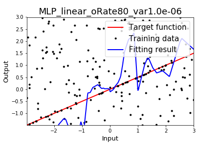 | fig_MDN_cosexp_oRate40_var1.0e-06_data | 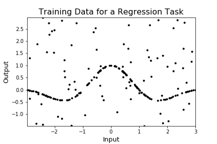 | fig_MDN_cosexp_oRate40_var1.0e-06 | 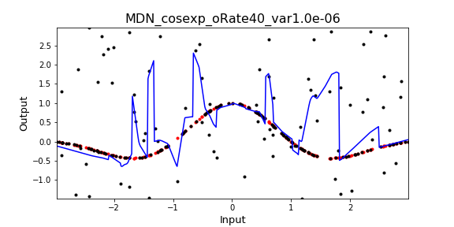 | fig_MDN_cosexp_oRate20_var1.0e-06_data | 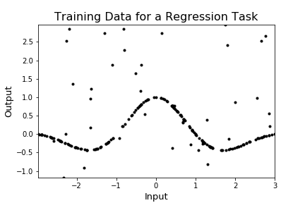 | fig_MLP_cosexp_oRate60_var1.0e-06_data |  | fig_MLP_cosexp_oRate60_var1.0e-06_res |  | fig_MLP_cosexp_oRate80_var1.0e-06_data |  | fig_MLP_cosexp_oRate40_var1.0e-06_data |  | fig_MLP_cosexp_oRate80_var1.0e-06_res | 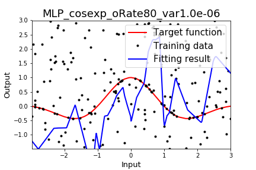 | fig_MLP_cosexp_oRate40_var1.0e-06_res |  | fig_MLP_cosexp_oRate20_var1.0e-06_data |  | fig_MLP_cosexp_oRate20_var1.0e-06_res |  | fig_MDN_linear_oRate60_var1.0e-06_data |  | fig_MDN_linear_oRate60_var1.0e-06 | 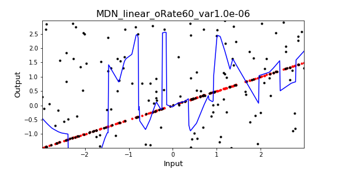 | fig_MDN_linear_oRate20_var1.0e-06_data | 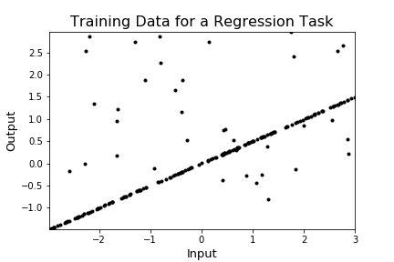 | fig_MDN_linear_oRate20_var1.0e-06 | 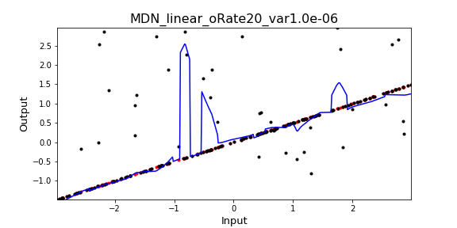 | fig_MDN_linear_oRate80_var1.0e-06_data |  | fig_MDN_linear_oRate40_var1.0e-06_data |  | fig_MDN_linear_oRate80_var1.0e-06 | 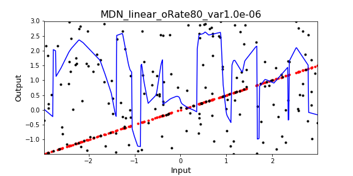 | fig_MDN_linear_oRate40_var1.0e-06 | 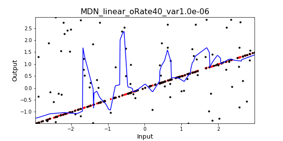 | fig_CN_cosexp_oRate20_var1.0e-06_data |  | fig_CN_cosexp_oRate20_var1.0e-06_res |  | fig_CN_cosexp_oRate60_var1.0e-06_data | 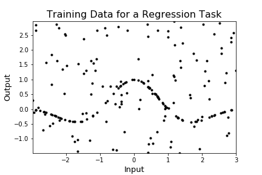 | fig_CN_cosexp_oRate60_var1.0e-06_res |  | fig_CN_linear_oRate80_var1.0e-06_data | 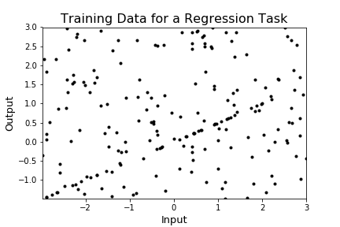 | fig_CN_linear_oRate80_var1.0e-06_res | 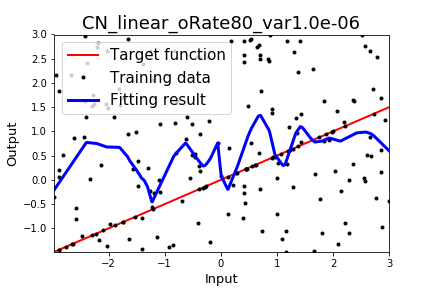 | fig_CN_linear_oRate60_var1.0e-06_data | 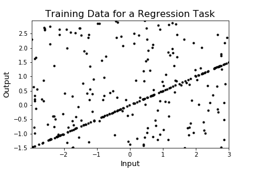 | fig_CN_linear_oRate60_var1.0e-06_res |  | fig_CN_step_oRate40_var1.0e-06_data | 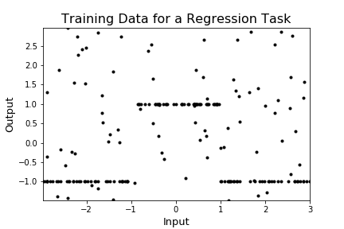 | fig_CN_step_oRate40_var1.0e-06_res |  | fig_CN_step_oRate80_var1.0e-06_data | 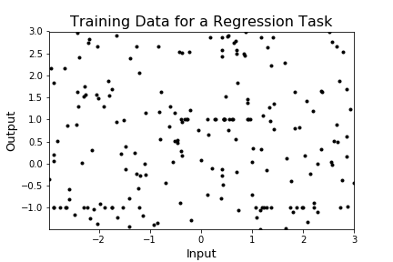 | fig_CN_step_oRate80_var1.0e-06_res | 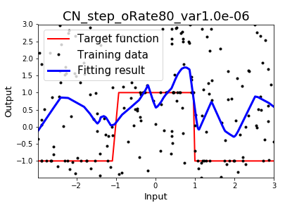 | fig_CN_linear_oRate20_var1.0e-06_data |  | fig_CN_linear_oRate40_var1.0e-06_data |  | fig_CN_linear_oRate20_var1.0e-06_res |  | fig_CN_linear_oRate40_var1.0e-06_res |  | fig_CN_cosexp_oRate40_var1.0e-06_data |  | fig_CN_cosexp_oRate40_var1.0e-06_res |  | fig_CN_step_oRate20_var1.0e-06_data |  | fig_CN_step_oRate20_var1.0e-06_res |  | fig_CN_cosexp_oRate80_var1.0e-06_data |  | fig_CN_cosexp_oRate80_var1.0e-06_res | 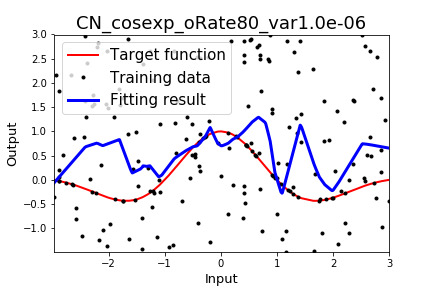 | fig_CN_step_oRate60_var1.0e-06_data |  | fig_CN_step_oRate60_var1.0e-06_res |  | fig_MLP_step_oRate80_var1.0e-06_data |  | fig_MLP_step_oRate80_var1.0e-06_res | 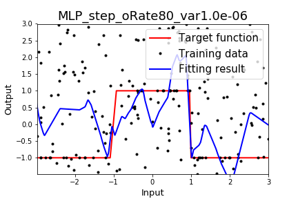 | fig_MLP_step_oRate60_var1.0e-06_data |  | fig_MLP_step_oRate60_var1.0e-06_res |  | fig_MLP_linear_oRate20_var1.0e-06_data |  | fig_MLP_linear_oRate20_var1.0e-06_res |  | fig_MLP_linear_oRate60_var1.0e-06_data |  | fig_MLP_linear_oRate60_var1.0e-06_res |  | fig_MLP_step_oRate20_var1.0e-06_data |  | fig_MLP_step_oRate40_var1.0e-06_data |  | fig_MLP_step_oRate20_var1.0e-06_res |  | fig_MLP_linear_oRate40_var1.0e-06_data | 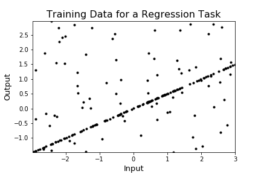 | fig_MLP_linear_oRate80_var1.0e-06_data |  | fig_MDN_cosexp_oRate80_var1.0e-06_data | 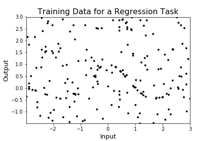 | fig_MDN_cosexp_oRate80_var1.0e-06 | 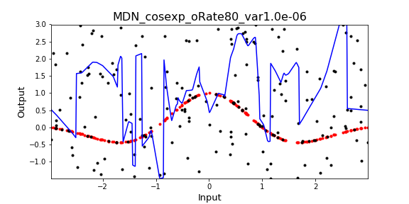 | fig_MDN_cosexp_oRate20_var1.0e-06 | 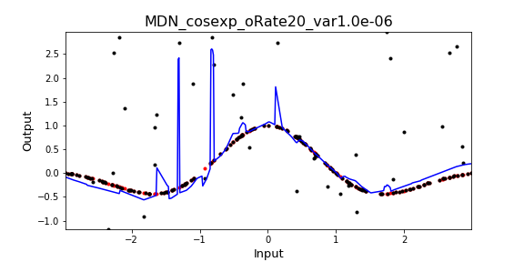 | fig_MDN_cosexp_oRate60_var1.0e-06_data |  | fig_MDN_cosexp_oRate60_var1.0e-06 | 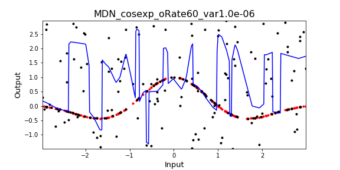 | fig_MDN_step_oRate20_var1.0e-06_data | 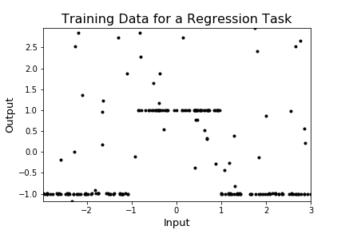 | fig_MDN_step_oRate20_var1.0e-06 |  | fig_MDN_step_oRate60_var1.0e-06_data | 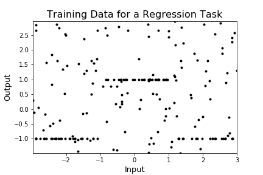 | fig_MDN_step_oRate60_var1.0e-06 | 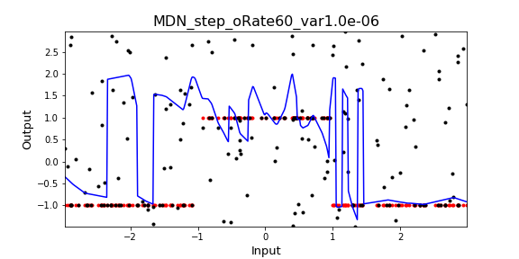 | fig_MDN_step_oRate40_var1.0e-06_data |  | fig_MDN_step_oRate40_var1.0e-06 | 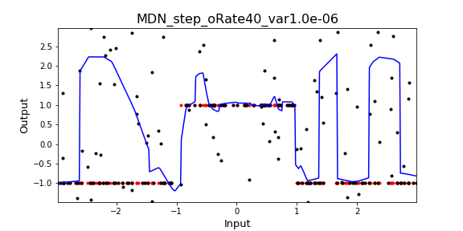 | fig_MDN_step_oRate80_var1.0e-06_data |  | fig_MDN_step_oRate80_var1.0e-06 | 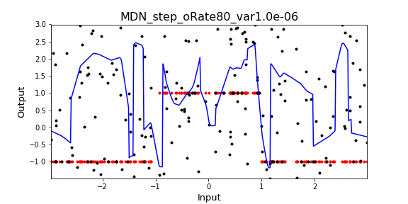 |